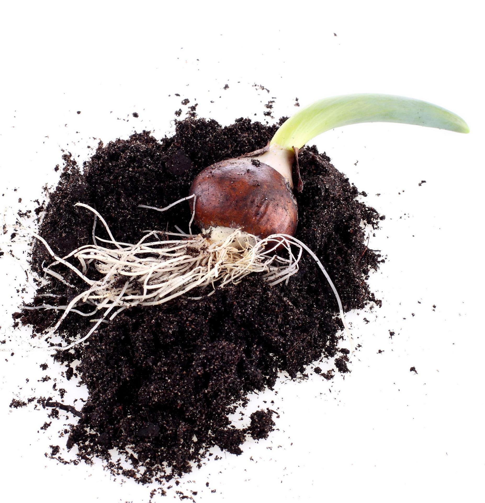
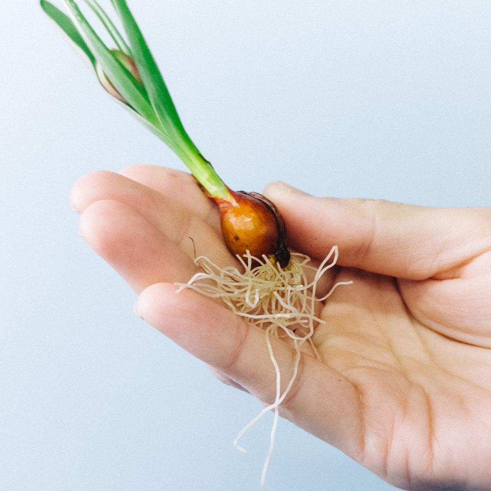
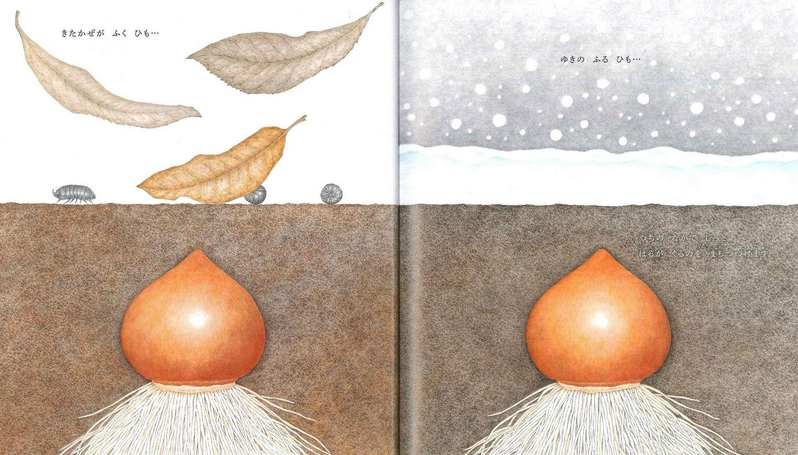
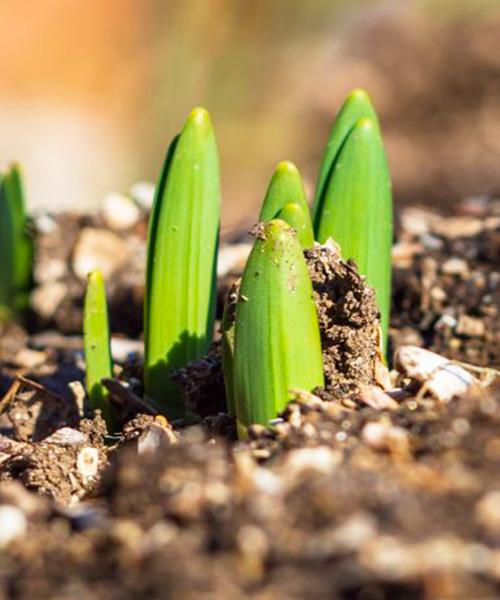
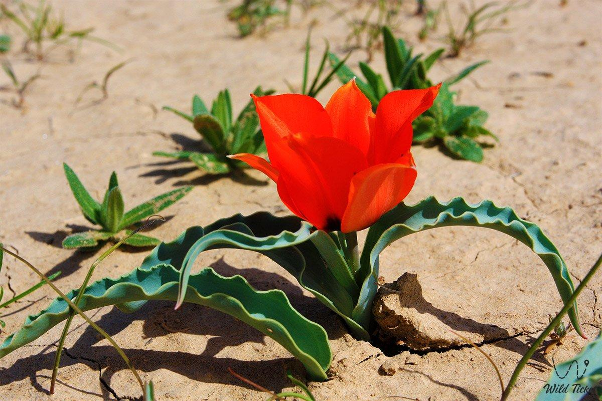
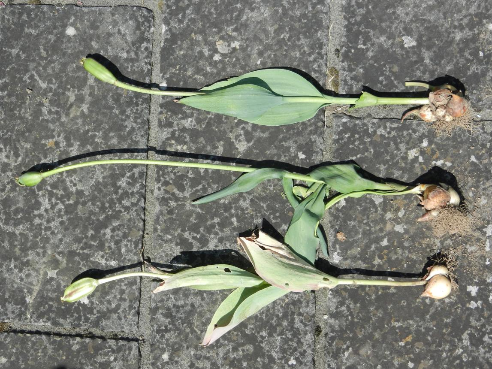

Строение, развитие и жизненные процессы одного из самых красивых весенних растений
Читать далеенакапливает питательные вещества и помогает растению пережить неблагоприятный период, а также обеспечивает начало нового роста.
поддерживает листья и цветок, а также проводит воду и питательные вещества по растению.
поглощают из почвы воду и минеральные вещества, а также закрепляют растение в земле.
участвуют в фотосинтезе, благодаря которому растение получает органические вещества для роста и развития.
служит органом полового размножения: в нём происходит опыление и формируются семена.





